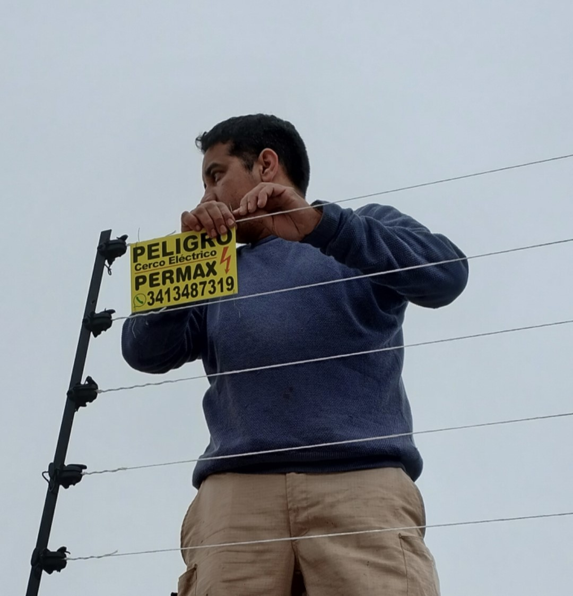
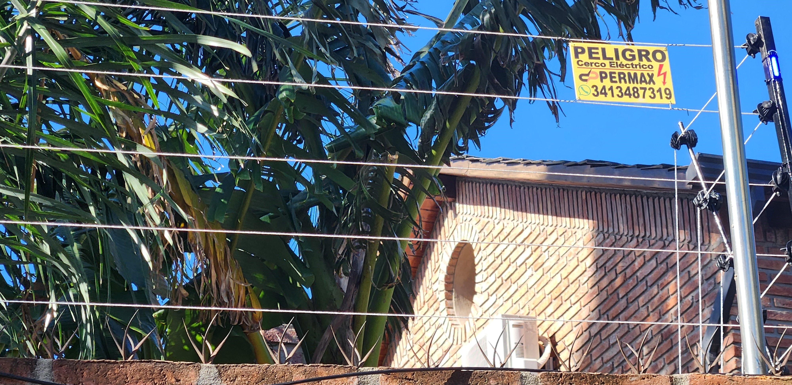
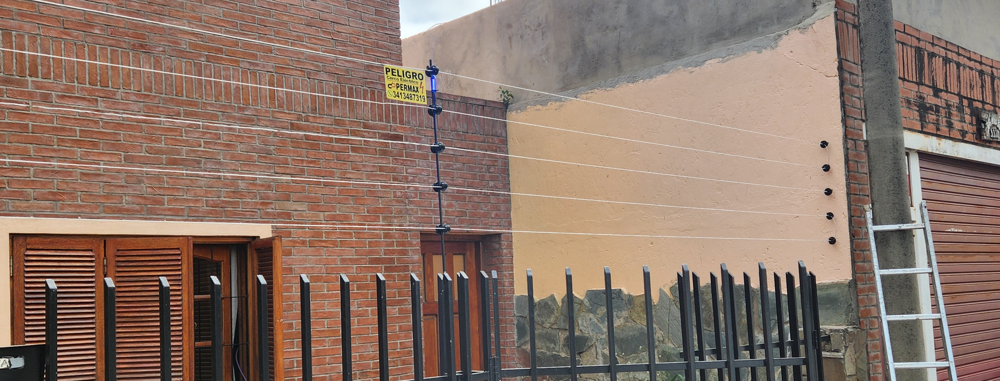

¿Cómo nace "PERMAX"?
En 2021, en un mundo donde la seguridad es primordial, surgió una marca innovadora llamada "Permax Cercos Eléctricos". Su historia se remonta a un equipo de amantes de la seguridad que se propusieron revolucionar la protección de hogares y negocios.
¿Por qué "PERMAX"?
El nombre "Permax" representa el máximo rendimiento y la protección permanente que ofrece la marca. Mediante una combinación de sistemas electrónicos de vanguardia y diseño de calidad, se lograron crear los Cercos Eléctricos Permax.
MERECÉS
ESTAR
SEGURO
Estos cercos perimetrales eléctricos no solo ofrecen una protección segura, sino que también añaden un toque de elegancia a tu hogar. Con un diseño moderno y minimalista, se integran perfectamente con cualquier estilo arquitectónico, complementando la estética de tu propiedad.
 5 Beneficios de instalar un cerco eléctrico
SEGURIDAD
Un cerco eléctrico crea una barrera disuasoria para intrusos, ya que el riesgo de recibir una descarga eléctrica actúa como una protección efectiva.

DISUASIÓN
Saber que hay una barrera electrificada puede hacer que los delincuentes reconsideren su intento de ingresar a la propiedad.
ALERTA TEMPRANA
Muchos cercos eléctricos están conectados a sistemas de alarma que se activan cuando se interrumpe el circuito eléctrico. Esto proporciona una alerta temprana a los residentes.

COSTO EFECTIVO
Comparado con otros sistemas de seguridad, los cercos perimetrales eléctricos suelen ser más accesibles de instalar y mantener.
FLEXIBILIDAD
Los cercos eléctricos pueden adaptarse a diferentes tipos de propiedades y terrenos. Pueden ser instalados en terrenos irregulares, alturas variables y en diferentes tipos de entornos.
NUESTROS SERVICIOS